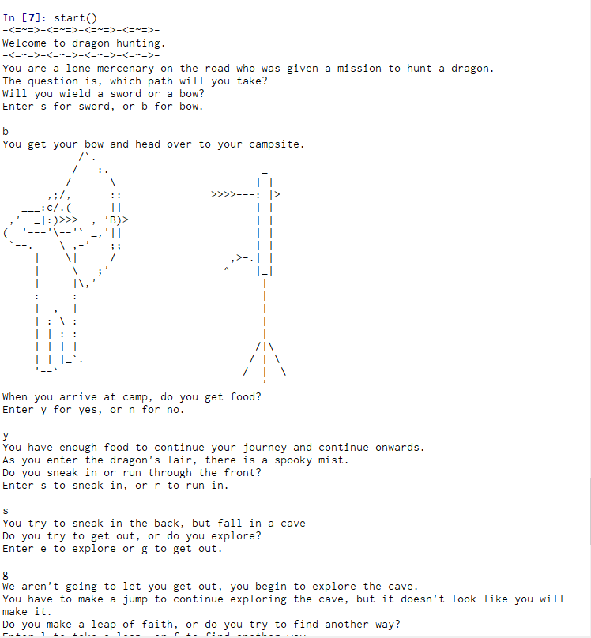
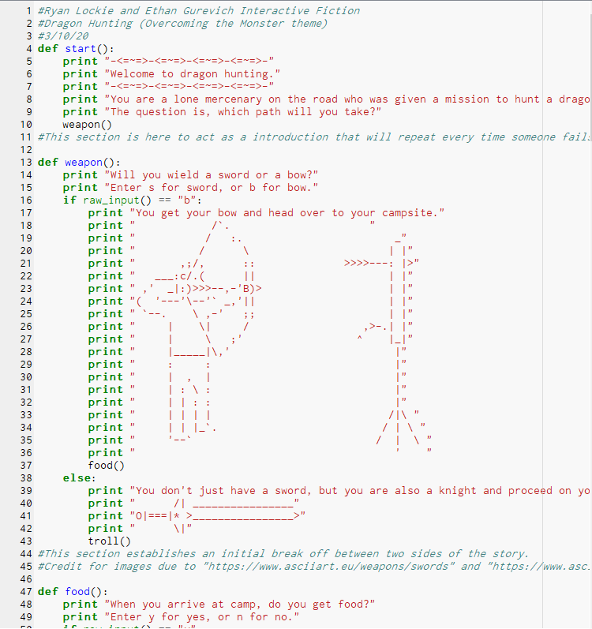
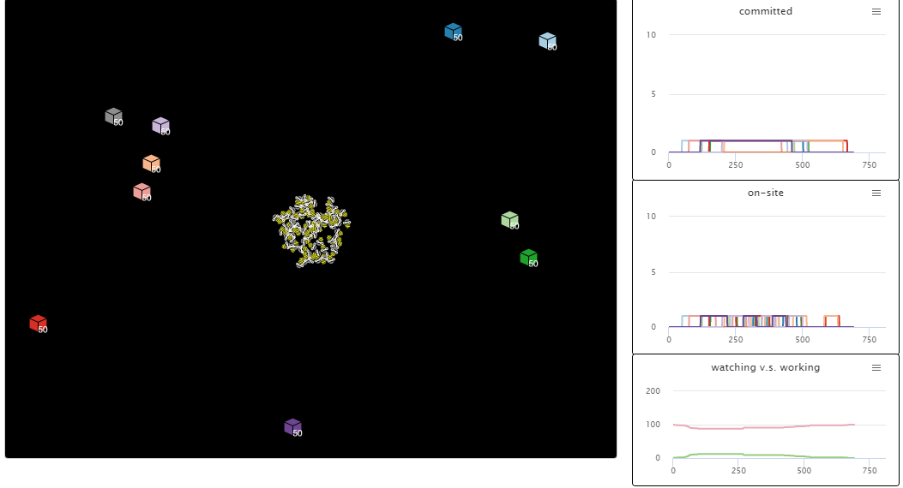
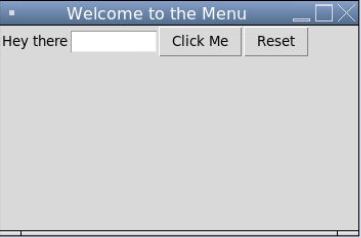
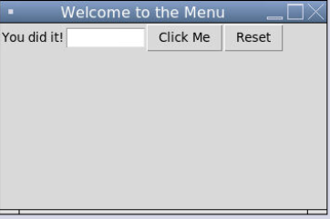
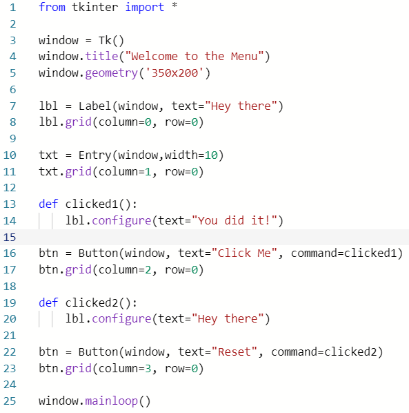

This is my Portfolio Page!

This is the first game I made with Scratch! In this game, you play as Dan and are trying to make sure that D Money doesn't catch the ball. If he does, you lose. Also, every ten seconds, a new D Money will appear. And, every 11 seconds, another ball will appear. There is also four difficulty settings, with the keys e, r, h, and s, you can increase difficulty. Watch out, though, because if you go super mode, D Money will dance all over the place! Press the green flag to start, or the red stop sign to pause.
These are images of the app that I made with MIT App Inventor! In this app, you can play tic tac toe with a friend! Also, there is cool background music, so make sure that the sound is on. We designed it so that at the top of the screen, the current player is displayed, and if someone wins, a victory song plays. One of the most unexpected things that had to be considered when designing this was that we needed a different condition to be considered for every way of winning the game.


These are screenshots of an Interactive Fiction game's gameplay and code that I made with Python 2.7 using Canopy. In this game, called Dragon Hunting, you attempt to hunt a dragon, but you get interupted along the way. Will your choices lead you to victory? or defeat? This project was mainly written using 'def' code lines and creating commands that would be executed when different options were chosen, using the 'raw_input' and 'else' functions.
 
This is an image of a simulation and its' data. This was originally the default Net Logo Bee Simulation, which starts with bees who travel to different hives that each are of a different quality. The bees tend to stay at the hives with higher quality more often, but their times decay over time. I thought it would be interesting to find out what would happen if all of the hives were of the same quality. Initially, the bees all went around to random hives because they were all the same, and the data reflects this. But, they eventually stopped going out at all because all of the hives decayed in quality and there were none left worth going to, as none were better than the others.

These are images of a GUI that I made using Tkinter on repl.it, along with its' code. The two images of the actual GUI depict it before and after pressing the button. I also added a reset button that will return the GUI to its' original state. I did all of this by making it so that each button in Tkinter had a defined function attached to it, that when fired would change the message in the main part of the GUI. The 'click me' button essentially just changes the message, and the 'reset' button changes it back by covering up the new message with a copy of the original.
  